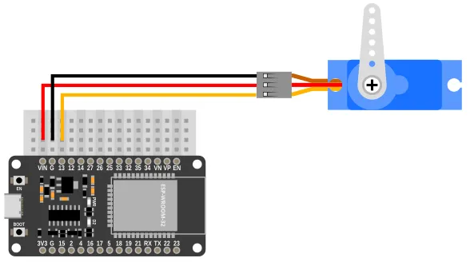
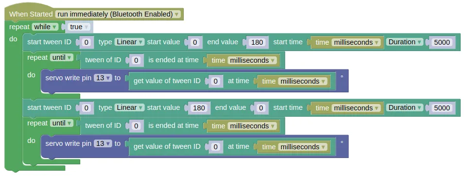

Tween
From left: No Tweening, Linear Tween, In-Out Quadratic Tween
It is often undesirable to start and stop something instantly. For example, when moving a servo arm, you might want it to start slow, gradually speed up, then slow down when it approaches its destination.
With this extension, you can provide the start, stop, and duration (or speed), and it will generate the intermediate steps for you with the appropriate easing function.
Wiring
The tween extension doesn't require any hardware, but it'll be hard to demonstrate how it works without an output device. For the example code, we'll be using a servo to demonstrate tweening.

Code
This code will change the angle for servo on pin 13, from 0 to 180 degrees and back using a linear tween.
time.time() has a 1 second resolution, so the movement will be jerky. You can work around this by using time.ticks_ms() / 1000 to get a floating point value for the time in seconds.
Blocks

Python
import tween
import time
from ioty import pin
while True:
tween.start(0, tween.LINEAR, 0, 180, time.ticks_ms(), duration=5000)
while not tween.is_ended(0, time.ticks_ms()):
pin.servo_write_deg(13, tween.get(0, time.ticks_ms()))
tween.start(0, tween.LINEAR, 180, 0, time.ticks_ms(), duration=5000)
while not tween.is_ended(0, time.ticks_ms()):
pin.servo_write_deg(13, tween.get(0, time.ticks_ms()))
Results
You should see the servo turn gradually from 0 to 180 degrees over 5 seconds, then turn back to 0 over the same duration.
tween - tweening extension
Constructors
None.
Use the functions provided by tween.
Functions
Methods
tween.start(id, type, y0, y1, x0, duration=0, speed=1)
Starts a tween.
The arguments are:
-
idAny value (eg. integer, string, float). You can think of this as a name to identify the tween. -
typeThe easing type (see https://easings.net/) for the tween, which can be one of the following:-
tween.LINEARChanges the output linearly. -
tween.IN_QUADGradually speed up, but stops abruptly. -
tween.OUT_QUADStarts abruptly, but gradually slow down. -
tween.IN_OUT_QUADGradually speed up and slow down. -
tween.IN_CUBICSame as IN_QUAD, but with a more distinct change in speed. -
tween.OUT_CUBICSame as OUT_QUAD, but with a more distinct change in speed. -
tween.IN_OUT_CUBICSame as IN_OUT_QUAD, but with a more distinct change in speed. -
tween.OUT_ELASTICOvershoots the end, then gradually settle down. -
tween.OUT_BOUNCEBounce when it hits the end.
-
-
y0A number. Starting output value. -
y1A number. Ending output value. -
x0A number. Starting input value. This is usually the time. -
durationA number representing the tween duration. In the same unit as whatever you use forx0. -
speedA number representing the speed. In the same unit as whatever you use forx0. This is only used if duration is 0.
Returns None.
tween.remove(id)
Removed the specified tween.
The arguments are:
idAny value (eg. integer, string, float). This should be the same value used when creating the tween.
Returns None.
tween.is_ended(id, x)
Check if the tween is ended at the given x value.
The arguments are:
-
idAny value (eg. integer, string, float). This should be the same value used when creating the tween. -
xA number representing the current x value. This is usually the time.
Returns a Boolean. True if the tween is ended, else False.
tween.get(id, x)
Get the y value for the given x.
The arguments are:
-
idAny value (eg. integer, string, float). This should be the same value used when creating the tween. -
xA number representing the current x value. This is usually the time.
Returns a float representing the current y value.